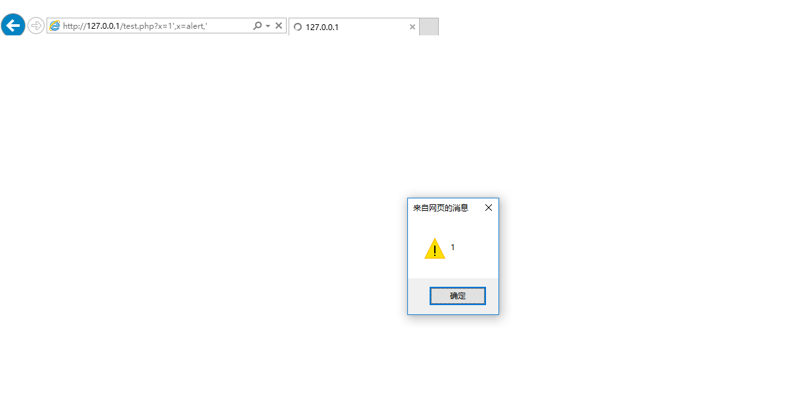

通过函数重定义绕过xss过滤器(IE)
这个bypass的方法在近期的版本已经不适用，但是仍然可以在兼容模式下适用，你可以想一些办法强制IE进入兼容模式，例如添加一栏像下面这样，这行代码将使IE的JS引擎回到老旧模式（IE7）。
|
|
现在我们需要建立一个实验页面，让用户可控参数出现到JS函数的参数里面。
test.php
|
|
在老版本的IE浏览器里面，是有可能在一个函数的调用参数的地方重定义这个函数的。这将对绕过xss过滤器非常有用（如果你的payload能出现在这里）
通过GET传参somepage.php?x=1',x=alert,'
最后的结果像是这样
|
|
这个payload将闭合两边的引号，同时function x重定义为alert因为alert只接受一个参数，所以其他的多余参数将被忽 
不背翻译的锅
http://www.thespanner.co.uk/2014/04/07/bypassing-the-xss-filter-using-function-reassignment/